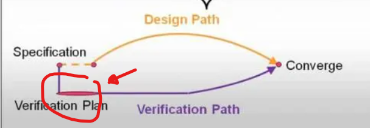

| A | B | C | D | E | |
|---|---|---|---|---|---|
1 | |||||
2 | Questions | Answers | |||
3 | Refering to our meeting, You stated that the core would be supporing "IM" extensions. However, the data book introduced a core supporting "IMFC_Zicsr_Zicntr_Zfinx" extensions. So, what exactly we should be testing? Also, what about the exceptions and other stuff related to CSR and priviledge spec. Should we be concered? or we should focus only on testing the instructions of "IM" extensions and their flowing through the datapath. | Only Vainlla I & M | |||
4 | Design Specifications: Do we need to submit the design specifications as well, or is it sufficient to provide only the verification plan and testbench architecture? | Design specification is the databook. Only submit verification plan (excel sheet and powerpoint) | |||
5 | IP and Interface Code: Could you please share the IP code and interfaces directly | Will be shared with you today. The aim for delaying the RTL is that most verification projects start before the RTL is finalised. We want to hone your abilities to work with abstract specifications without access to RTL | |||
6 |  | ||||
7 | can you explain the data memory interface , Should we implement the data memory and wrap the RISC-V core with it? | Answered in TEAM1 Q3: "The goal is a verification of the core only(No memory). Anything other than the core RTL is considered part of the TB. Engineers are required to implement the whole TB (Including the memory if they see it as a requirement)" Please allow yourself to analyse and see what best fits your verification need. The aim of the project is to give some control of the decision making | |||
8 | |||||
9 | |||||
10 | |||||
11 | |||||
12 | |||||
13 | |||||
14 | |||||
15 | |||||
16 |